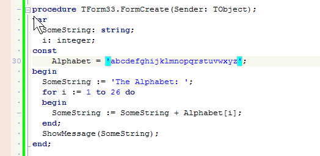

SyncEditing
This feature allows to rename lot if identical identifiers (IDs) at the same time.
To use it:
- Select a block of text with several identical IDs;
- You'll see small greenish icon appeared on gutter near the block ending - click it;
- SyncEditing mode is activated. Common IDs are highlighted. You can click any common ID and type its new value.
All instances of this ID in the selected block will be renamed as well.
The animated image shows SyncEditing in action:

Note that you may also (de)activate SyncEditing by shortcut - see menu item "Edit -- Toggle SyncEditing".